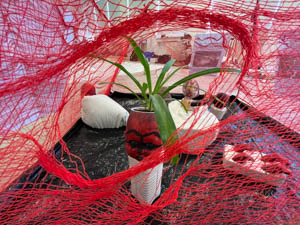
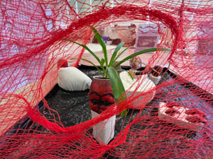
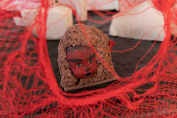
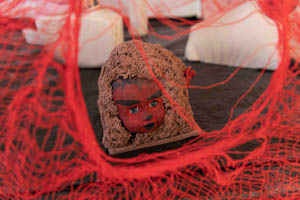

Fine arts
The Essence Of True Tranquility 2024
THE ESSENCE OF TRUE TRANQUILITY is a work adapting the story from Taoism about how the emperor sought true equanimity. Similarly, the author of the piece experienced a moment when he couldn't properly concentrate on his work, so he processed images from the story based on his free interpretation. For the author, this project is a personal matter, and he strongly believes that this work will help him find peace, tranquility, and concentration in his future creative endeavors.
Puff 2023
Yo-Yo machines are playful devices for nonverbal communication between people. Devices send expressive signals like light, mechanical movements, and sounds. Light Touch is a device that allows you to send color signals to each other across the internet.
You can choose a color that you can send to your friend and that will pulse on your friend's device. You can send these color signals in realtime or send them later.
Puff – device for friends, partners and lovers
In the end I decide to make device for friends, partners and lovers. In the era of mobile phones, it can be useless, but with all these SMS, MMS, emojis... we losing part of the intimate contact. I was thinking about combinate two Yo-Yo machines: Light Touch and Knock Knock. But during of working I realize that would be really hard to make. The way of making was really long, but here is the Puff!
{kind=link}
My little abortion 2021
In my exam project, I decided to focus on the topic of abortions, which are heavily debated in Poland, Slovakia, Hungary, America, and other countries. I got the first idea to explore this topic at a protest in Prague in front of the Slovak embassy, where the thought arose that even though abortions are not banned here, a similar situation could still occur. Throughout the semester, we also dealt with the topic of witchcraft, and here I discovered a connection between how they were oppressed in the past and how they are oppressed today, as people try to take away their rights to abortions. The exam project is meant to draw attention to this problem, so I created a series of figurines. These figurines are made of clay and plaster. I always used a part of a toy baby's body as the base, which I then connected with clay or plaster. At first, I made them using clay, but later I also started using plaster, which I discovered was a new way of using it. Since I usually poured plaster into objects to create a certain shape, the result was often surprising compared to clay, where I could create the entire torso as I imagined it. However, my personal breakthrough came when I was making a sculpture where I poured plaster over the entire body of the baby and then carved it out with a chisel. This sculpture was very exhausting and time-consuming. It was like giving birth, and people around me started to liken this sculpture to childbirth, which is why I decided to call it "unfinished birth". The figurines are displayed in an enclosure that represents a children's corner. The enclosure is made of a net, on which newspaper articles related to cases and events related to abortions are hung.


 

{kind=link}


 

{kind=link}